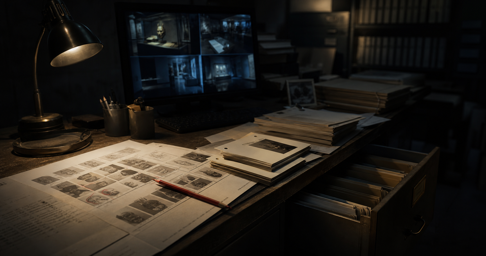

1996年8月19日、旧館展示室で撮影された写真が文化面に掲載された。写真の中央には祭礼面が写っているが、角の欠け方が現在の展示品と一致しない。記事のキャプションには「旧館第2展示室、寄贈資料整理中」とだけ記されている。
ARCHIVED SOURCE
白楼日報アーカイブ

照合メモ
この資料に含まれる日付、時刻、資料番号、人名は、調査ノートで使用します。表記はできるだけそのまま控えてください。
ARCHIVED SOURCE

1996年8月19日、旧館展示室で撮影された写真が文化面に掲載された。写真の中央には祭礼面が写っているが、角の欠け方が現在の展示品と一致しない。記事のキャプションには「旧館第2展示室、寄贈資料整理中」とだけ記されている。
この資料に含まれる日付、時刻、資料番号、人名は、調査ノートで使用します。表記はできるだけそのまま控えてください。